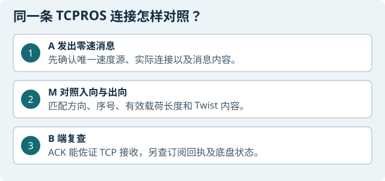

本章目标
分清 TCPROS 控制连接的传输、ROS 消息和底盘响应三个层次。先取得正常基线，再只观察全零 Twist 的有限双向转发，离线逐帧核对两向序号、确认号、载荷和 B 端 ACK；如课程还安排实体脉冲演示，必须使用自有隔离设备、固定架空的底盘、现场看守和实体急停；否则只做零速与离线分析。禁止在正常网络对真实设备随意改写速度或持续运动。
A 是控制机，M 是实验中间机，B 是小车。M 不得同时运行内核转发和用户态 relay。TCP ACK 只说明 TCP 层收到了相应字节；ROS 驱动是否收到、底盘是否响应须分别核查。
准备与范围控制
需要实验六资料、A 上低速遥控副本、M 上实验工具、A/M 抓包工具和本轮可写证据目录。先确认隔离网络、三端身份与本轮参数。B 必须固定架空（若做实体示范）、轮子离地、看车人可实体断电；仅网络/SSH 停车不够。无这些条件，只完成基线与离线分析。
严格停在预览/只读的条件：端口或 TCP 连接不明、MSS/路径 MTU 未核、B 不在线、恢复通道不独立、抓包未启动，或已有其他速度源。不得沿用历史地址、端口、MAC、RUN。
操作步骤
识别 A、M、B 和当前会话
A / M / B 本机终端 分别读
hostname、date -Is、ip -br -4 addr、ip -br link和ip -4 route。填写当天拓扑表并记录时钟差。端点角色、路由或桥接不明确：停止在只读检查，不进行转发。
检查本机工具，不连接小车
A 本机普通终端 使用控制机检查器。输出目录每轮单独建立。
mkdir -p "$HOME/lab6_controller_environment" A_CHECK=$(mktemp -d "$HOME/lab6_controller_environment/recheck_XXXXXX") python3 ~/lab6_prep/工具/check_controller_lab6.py --kit ~/robot_labs --output "$A_CHECK"M 本机普通终端 使用 M 的检查器，它不连接小车。把 M 的工具版本和校验值记在本轮表里。
cd ~/lab6_prep python3 工具/check_lab6_env.py继续：两机自己的检查均通过。若缺文件、检查 FAIL 或版本不符，先取得对应版本的实验六工具和低速副本。离线自检通过只说明该版本的本机检查通过。
查 B 端真实 ROS 与停车办法
B 本机；同伴看守 确认原 ROS master/底盘驱动属于本组、实际车轮静止，并测试实体停车人能接管。不要另起 roscore，也不要停止共享会话。
master/驱动来源不清或无法实体停车：不进入任何速度发布步骤。
A 做 ROS 只读基线
A 的 ROS1 shell 运行：
echo "$ROS_VERSION $ROS_DISTRO $ROS_MASTER_URI $ROS_IP" rostopic type /cmd_vel rostopic info /cmd_vel rosmsg show geometry_msgs/Twist应看到实际话题类型为
geometry_msgs/Twist，发布者与 B 驱动订阅者身份可解释。发现多个速度发布者、话题类型不同或节点跳变：停止并记录。清点速度源，准备零速开局
A ROS1 shell / B 看守 在
rostopic info /cmd_vel的 Publishers 中逐一核对节点。请本组原操作者先停稳再退出本组旧导航或遥控。确认只会由下一步选定的实验六低速副本产生速度，先保持车轮静止，等抓包开始后才启动该副本。任何速度源归属不明、无法停车或另有速度源正在运行时，先处理原会话。
建 RUN 并保存原网络状态
M 参数终端 创建独立新目录，复制当天参数，保存 M 的 sysctl、防火墙只读状态、接口 MTU和工具哈希；每个 M 终端载入同一 RUN。不要清空规则。
原值未落盘、终端 RUN 不一致或有未结束的旧 relay/ARP：停止并恢复上一轮。
先抓 A 的正常 TCPROS 基线
A 抓包终端 对照第 1 步填写当天的 A 网卡、A 与 B 的 IPv4。下面三个
REPLACE_…都是占位符。先保持零速，再开抓包。只在自有隔离实验网抓取本组连接。A_IFACE='REPLACE_A_INTERFACE' A_IP='REPLACE_A_IPV4' B_IP='REPLACE_B_IPV4' mkdir -p "$HOME/lab6_A" A_RUN=$(mktemp -d "$HOME/lab6_A/baseline_XXXXXX") sudo tcpdump -i "$A_IFACE" -nn -s 0 -U -w "$A_RUN/01_baseline_A.pcap" \ "arp or (ip and host $A_IP and host $B_IP)"A 图形桌面 先确认车身固定、驱动轮架空和实体急停可用，再按实验六操作单打开低速副本。松手归零，空格或 Esc 锁停。若当前只做零速观察，保持零速。基线抓包结束后，在抓包终端按 Ctrl+C 保存计数。
A / M 离线分析 在 Wireshark 打开基线 PCAP。选择本组的 TCP 包，在右键菜单点“追踪流 → TCP 流”，核对连接头中
topic=/cmd_vel、type=geometry_msgs/Twist与 B 的底盘订阅者。记录 A 发往 B 的源 IP、源端口、目的 IP、目的端口及 stream 编号。B 发起 SYN 时，仍以负载内容判断谁发布速度。继续：能在同一连接上解释发布者、订阅者和消息方向。抓不到握手、连接重建或四元组不明时，先保持零速，重新查本组连接。
交叉核对 MTU、PMTU 与 MSS
A / B / M，只读检查 在各端运行以下只读命令，记录所有 A↔B TCP socket 的四元组与路径信息：
ip -br link ip route ss -tin记录接口 MTU、实际路径 MTU及每条可能被 relay 接收的 A/B TCP 连接两端 MSS；forward 覆盖该地址对范围内的连接，不只覆盖
/cmd_vel。在ss -tin输出中按实际四元组关联mss和pmtu，不要把rcvmss当作对端承诺。任一连接未核、MSS 与当前分段限制不兼容或出现超 MTU不明：停止在零速基线。不要靠调高 MTU、盲关 offload 或反复重发来绕过。
另建全零观察轮
A 发布器；A/M 抓包 仅在自有隔离实验网中，以限时实验六零速发布器产生全零 Twist；先开 A、M 抓包并确认文件正在增长，再启动实验工具的 forward-only 零速轮。此阶段不启用 invert/scale，不允许非零输入。
抓包未运行、发布器出现非零、M 工具参数不是 forward 或出现安全拒绝：立即停本轮，保持零速并按恢复步骤恢复。
同步启动仅 A 侧的短时引流
M 中继与 ARP 终端 按本机实验工具的固定参数设置短时窗口；只对 A 做映射引流，绝不对 B 发 ARP。确认 relay 在窗口内正常运行，内核
ip_forward与工具要求一致；两者不得并行。relay 没显示 LIVE、窗口未重叠、邻居变化不符或有任一错误：不延长、不重跑旧 RUN，立即停车与恢复。
停止后离线核对双向 PCAP 与 ACK

操作示意｜TCP 交付、ROS 订阅与车轮运动是三个不同的检查点。 M / A 离线分析 停止流量窗口，打开本轮 PCAP。先点开 TCP 包详情里的序号（Sequence Number）、确认号（Acknowledgment Number）、TCP 段长度和负载；再打开以太网详情，看 A→M、M→B 两段的源和目标 MAC。把入向和出向的同一段配成一行，记录时间、方向、序号、负载长度和字节。用同样方法配 B→M 与 M→A 的反向包。
从 TCP 流的应用消息边界核对 Twist 六分量都为 0。B 的 ACK 应覆盖相应字节，纯 ACK 通常没有负载。确认原始 PCAP 的 captured、received、dropped 计数，并保存 SHA-256。
判读：有双向帧配对和 ACK，可以写 TCP 层的转发与接收。只有程序日志或 ACK、缺一向，或负载无法重组时，写明缺的证据。判断 ROS 驱动是否接收要另核对 B 端。
按固定顺序恢复
A 控制机 / M 实验中间机 / B 小车 保持 A 零速 → 确认 relay 退出 → 若 A 仍映射到 M，才在临时恢复窗口接管转发并停止 A-only helper → 在 A 核对 B 的真实 MAC并恢复邻居 → 验证 A/B 直连和原 TCP 状态 → 将 M sysctl 恢复 RUN 原值 → 停抓包并核计数 → 查无残留进程。
任一状态未知：车辆保持静止，调用 B 本地恢复人；不得开始另一轮。
选做：独立的架空短脉冲示范
A 控制机 / M 实验中间机 / B 小车；独立新 RUN 这是与零速轮完全分开的选做演示。先使车身固定、驱动轮离地、实体急停人就位，再做正常短脉冲基线并确认轮向/停稳；仅在你自己的隔离实验设备上，按本机低速工具的固定短脉冲设置运行一次，随后立即归零。禁止地面车辆反向、连续调速或开放任意 payload。
用户无法确认轮动、控制连接重建、分段/发送报错或任何意外运动：立即实体停车，保留日志，结束本轮。不以 TCP ACK 代替轮动观察。
独立恢复并封存示范轮
A / M / B 按恢复步骤恢复；另行核对 A/B 邻居、M 原参数、所有工具退出和小车静止。分别保存正常基线、零速 PCAP、（如另做架空短脉冲）对应的 PCAP/录像与恢复回执。
架空轮转动只支持记录该轮的轮向和停稳状态；不得换算地面车速或距离。保存录像和对端证据；缺失时缩小结论。
检查与证据
每一轮单独保存：实验范围、角色、RUN、工具 SHA、ROS 话题、唯一速度源、MTU/PMTU/MSS、两端抓包统计、逐帧匹配与 B 接收证据、退出码、sysctl 前后值和恢复确认。区分“网络 send”“对端 ACK”“ROS 驱动接收”“实体轮动”四种证据级别。预期证据应包含双向帧配对、B 端对全零数据的 ACK，以及（若另做架空脉冲）独立轮次的车轮观察。离线 mock、发送错误前的部分帧或缺少 B 端证据的转发记录，不能作为现场验收。
常见问题
EMSGSIZE、unsupported、processing/send error：立即停止该轮、保留日志与 pcap；核实接口 MTU、所有相关流的 PMTU/MSS 与工具版本后另开 RUN。- 抓不到控制流：重新核对本轮四元组与捕获接口；不使用 11311 或 22 端口猜测。
- 有 ACK 但没有底盘证据：只记录 TCP 层；不称命令已执行。
- 邻居表未恢复或 SSH 断开：保持零速并用 B 本地恢复通道，不依赖可能已断的网络控制。
- 日志退出 0 但没有 forwarded 或 PCAP 配对：只说明进程正常结束，不代表转发成功。
收尾
零速状态先保持。确认 relay 与 ARP helper 退出，再恢复 A 的真实邻居映射与 M 原参数；确认直连、原 TCP 会话状态和实体静止，最后停止抓包、保存计数与哈希。不要结束共享的 ROS master 或底盘驱动；公开资料不附 PCAP、实时地址、私钥或个人凭据。
本章证据范围
离线测试、现场零速转发和架空短脉冲是不同证据。全零转发不证明速度改写；架空轮转动不证明地面行驶；ACK 不证明驱动已消费。报告时分别记录实际测试层次与缺失证据。